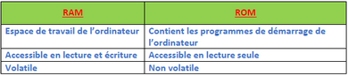
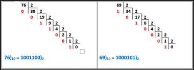
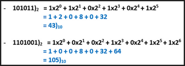
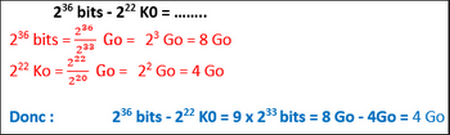

Correction — Correction

Correction N°2
1- Compléter le schéma suivant :

1- unité centrale 2- les organes périphériques 3- la mémoire centrale
4- unité de commande 5- unité arithmétique et logique 6- périphérique de sortie 7- périphérique de stockage 8- périphérique d’entrée 9 – écran 10- imprimante 11- cd-rom 12- clavier 14- RAM 15- ROM
2- Combien de bits sont-ils nécessaires pour 512 informations ?
9 bits
3- Qu’est-ce qu’un microprocesseur ?
Processeur ou Microprocesseur est l’élément de l’ordinateur qui interprète et exécute les instructions du programme situées en mémoire centrale
4- Citer les composants principaux d’un microprocesseur
• unité de commande
• unité de calcule
• des bus
• des registres
5- Expliquer à l’aide d’un tableau les différences entre la RAM et la ROM

6- Citer quatre ports de la carte mère en précisant les composants correspondants
• Port ps2 : pour brancher le clavier et la souris
• Port VGA : pour brancher l’écran ou vidéo projecteur
• Port parallèle : pour brancher l’imprimante
• Port USB : pour brancher des périphériques récents
7- effectuer les calculs suivants:
76)10 = ……..)2 et 69)10 = ………..)2

101011)2 = ……..)10 et 1101001)2 = ………..)10

236 bits - 222 K0 = ……..GO
